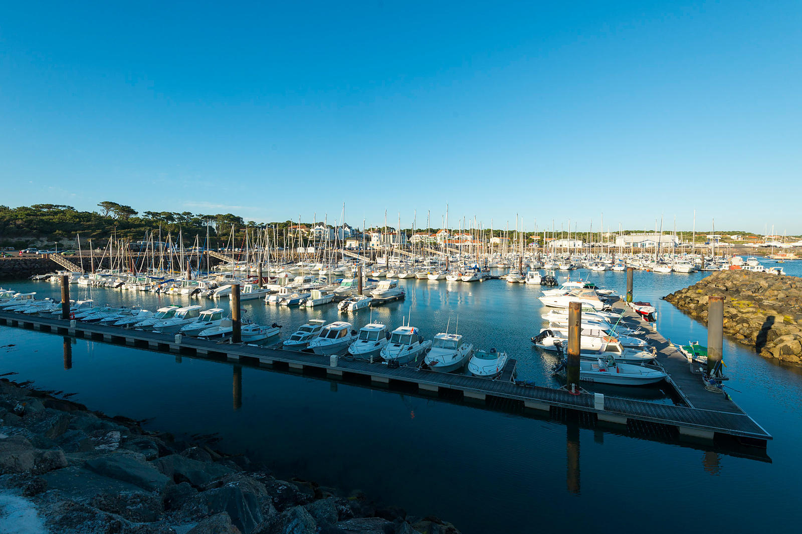

Travel is very important to me as i am a firm believer, that experiences are greater than materialistic items.
I have travelled to many places in my life however the one place that intrigued me the most was Martinique.
Martinique is an island in the Caribbean which is a department of France. I spent a 6 weeks in Martinique as part of a French exchange programme.
The experience was very beneficial as i became proficient in speaking French while learning about a new culture.
In 2010 my family and i travelled to Florida,America.
We attended the various theme parks which ranged from Universal Orlando to SeaWorld.
It was an incredible experience especially since i was only 10 years old at the time.
In my opinion this made the trip more magical and memorable as it was honestly a once in a lifetime experience
France is a country i have visited on many occasions throughout my childhood and adolescent years.
One place in particular which i am very fond of is Port Bourgenay,Talmont St. Hilaire.
The Port is surrounded by beautiful scenery, restaurants and countless beaches.
